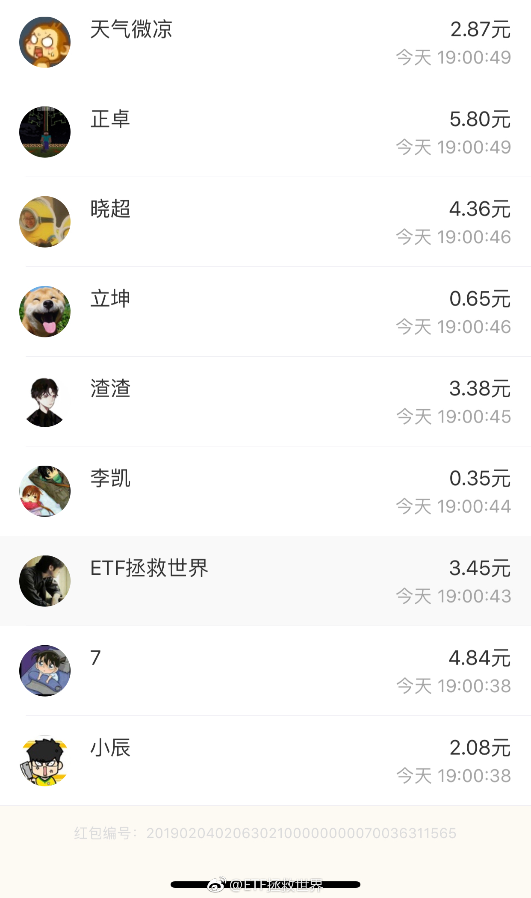

回复@周梦夏:我觉得明年也要换形式了，不知道有没有人知道答案后在群里分享，那样也不公平了//@周梦夏:今天抢了八块，期待明天@ETF拯救世界:支付宝口令红包的问题是每次只能包300个。发的多要想很多问题。不过这已经是相对来说最科学的发送方式了。。看看明天微博红包的情况吧，那就完全是运气了。。
回复@周军平1979:抢到的都是有麒麟臂的真爱。//@周军平1979:抢了3.82，谢谢E大！@ETF拯救世界:有没有搞错？38秒就能看完题输入口令？太牛了！显示十分钟抢完，是从塞钱进去开始算的。题是7点整更新。 